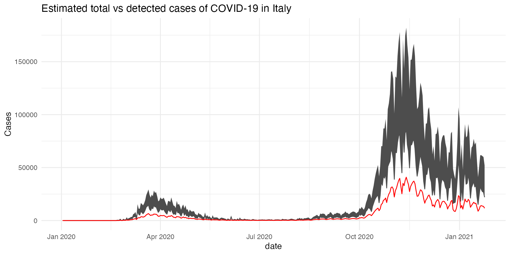

Let’s start by loading the example data. It’s bundled in the package but originally comes from https://github.com/GoogleCloudPlatform/covid-19-open-data (Apache License 2.0).
df <- readRDS(system.file("extdata", "covid19_ny.rds", package = "asymptor")) head(df) #> date cases deaths recoveries #> 1 2020-03-01 NA NA NA #> 2 2020-03-02 0 0 NA #> 3 2020-03-03 1 0 NA #> 4 2020-03-04 9 0 NA #> 5 2020-03-05 11 0 NA #> 6 2020-03-06 22 0 NA
We can feed this data directly to the estimate_asympto() function. This function requires 4 columns, labelled as date, cases, deaths, and recoveries (if you want the upper bound), containing the daily number (not the cumulated number!) )
asy <- estimate_asympto(df)
We may want to visualise these estimations alongside the empirical data. So, we start by merging the two datasets:
df <- merge(df, asy)
Then, we can the ggplot2 package to plot the result:
library(ggplot2) ggplot(df, aes(x = date)) + geom_line(aes(y = cases+lower), col = "grey30") + geom_ribbon(aes(ymin = cases+lower, ymax = cases+upper), fill = "grey30") + geom_line(aes(y = cases), color = "red") + labs(title = "Estimated total vs detected cases of COVID-19 in NY") + theme_minimal() #> Warning: Removed 2 row(s) containing missing values (geom_path). #> Warning: Removed 1 row(s) containing missing values (geom_path).
